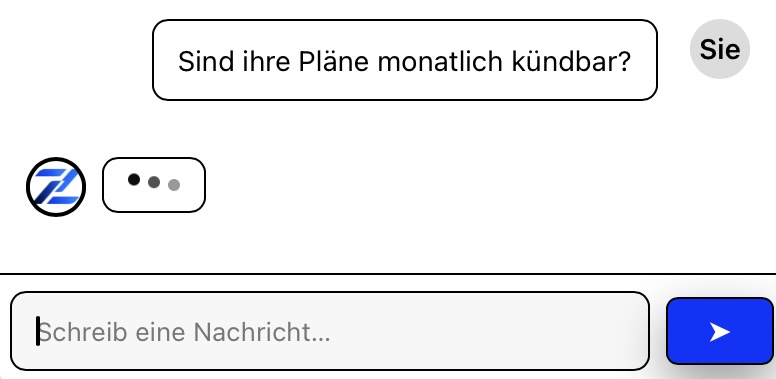
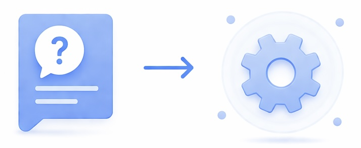
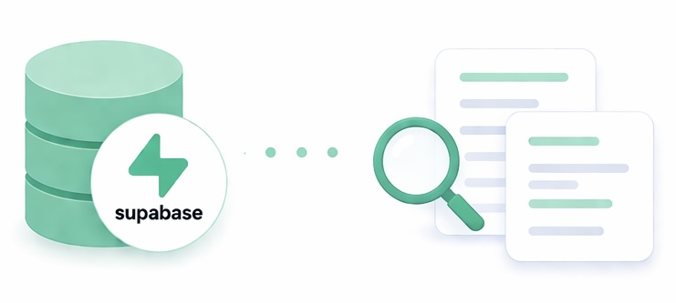
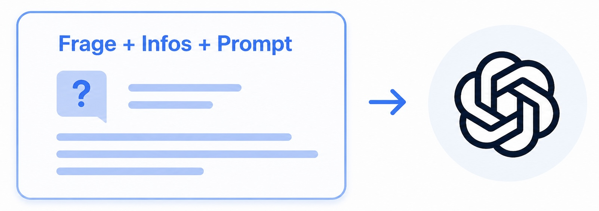
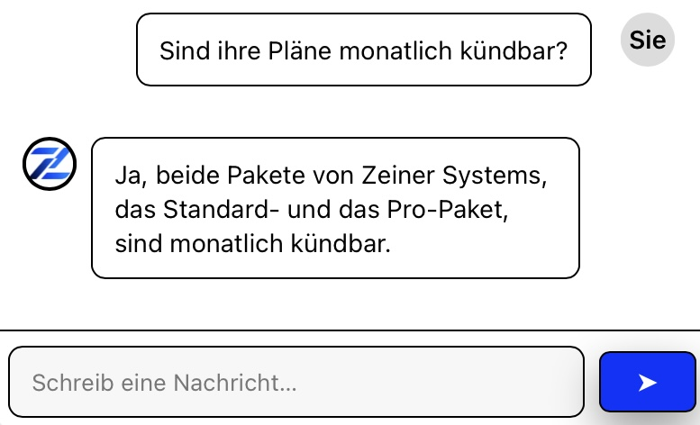

01
Besucher stellt eine Frage
Der Besucher schreibt seine Frage direkt in das Chat-Widget auf Ihrer Website.
Funktionsweise
Der Chatbot nutzt Ihre hinterlegten Inhalte, sucht passende Informationen heraus und erstellt daraus eine verständliche Antwort direkt im Chatfenster.

Der Besucher schreibt seine Frage direkt in das Chat-Widget auf Ihrer Website.

Die Frage wird technisch erfasst und für die Suche nach passenden Informationen vorbereitet.

In der Wissensbasis werden passende Informationen aus Website-Inhalten, FAQs oder Dokumenten gefunden.

Die gefundenen Informationen werden zusammen mit der Frage und dem Prompt genutzt, um eine verständliche Antwort zu formulieren.

Der Besucher erhält die Antwort direkt im Widget und kann bei Bedarf weitere Fragen stellen.
Der Chatbot wirkt für Besucher einfach, nutzt im Hintergrund aber eine strukturierte Verbindung aus Wissensbasis, Suche und KI-Modell.
Inhalte Ihrer Website, PDFs oder FAQs können als Grundlage eingebunden werden.
Relevante Informationen werden aus den hinterlegten Inhalten herausgesucht.
Das KI-Modell formuliert aus Frage und passenden Informationen eine verständliche Antwort.
Die Antwort erscheint direkt im Chatfenster auf Ihrer Website.
In einem kurzen Gespräch können wir klären, welche Inhalte vorhanden sind und wie ein Chatbot für Ihre Website sinnvoll aufgebaut werden kann.